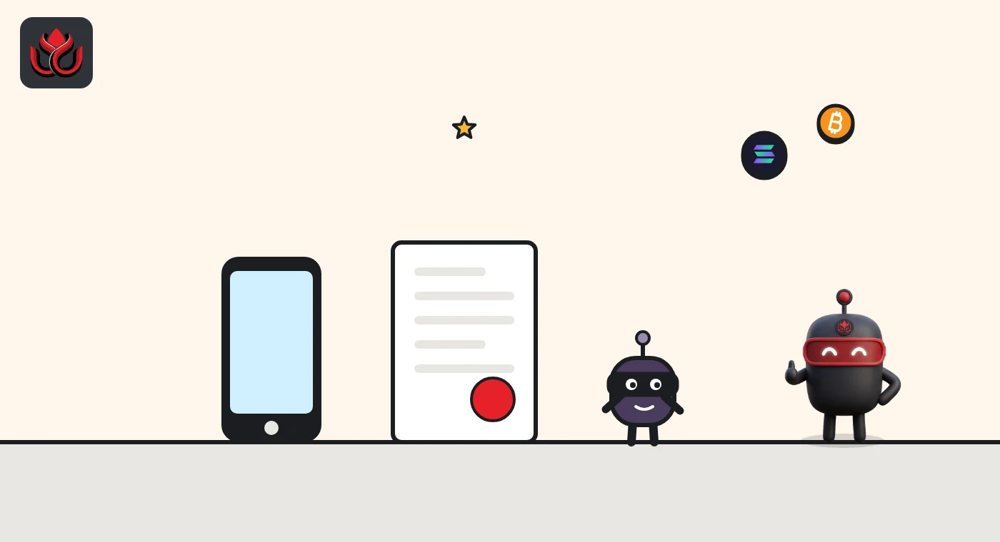
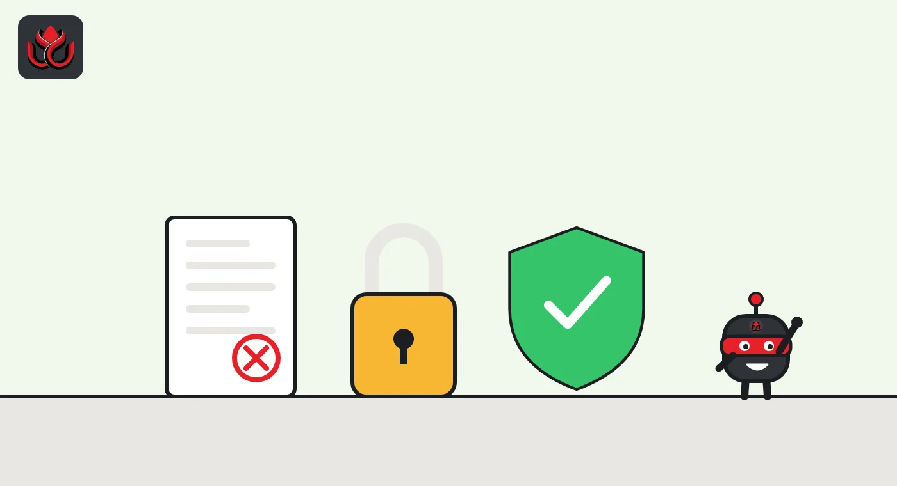

What is a wallet drainer? How one signature can empty your crypto wallet
A wallet drainer is a scam kit that tricks you into signing an approval or permit that lets the attacker move your tokens. Your seed phrase never leaves your hands: your own signature does the damage, sometimes days later.
Key points
- A drainer is a fake site, app or browser extension that gets you to sign a transaction or message granting someone else the right to move your tokens.
- The two main tools are token approvals (on-chain permission to spend) and permit signatures (off-chain, gasless messages that become approvals later).
- Permit-style signatures are popular with phishers because they cost no gas and can look like a harmless login request.
- If you signed something bad, revoking the approval fast can stop further theft. Assets already taken generally cannot be recovered on-chain.
 What DeepSea's data shows
What DeepSea's data shows
Drainers leave trails that analytics firms label. On November 2, DeepSea's scam alerts page counted more than 5,000 addresses flagged for phishing, 2,000 for scams and 1,000 for exploits.
Not every theft needs a signature prompt. DeepSea's FomoPeek page describes a fake app on Apple's App Store that was paired with an iOS kernel exploit to take funds from iPhone users; it shows $1.03 million from that case reaching exchanges in 30 deposits.

Data: DeepSea (desea.io), checked November 2, 2026, 7:59 a.m. ET.
What is a wallet drainer?
A wallet drainer is a phishing tool aimed at crypto wallets. It usually comes as a fake website, a copy of a real app or a malicious browser extension. Instead of stealing your password, it asks you to sign something. That signature gives the attacker permission to move your tokens or NFTs, and the drainer's code then takes them.
MetaMask's guide to signature phishing describes the pattern: a fraudulent app asks you to sign a message that looks like a deposit or an NFT listing, but it actually grants an unlimited token approval or lets assets be withdrawn. The attacker then uses that signature to move your assets, sometimes long after you visited the site.
Hardware wallet maker Ledger describes another form: malicious browser extensions that change the recipient, amount or contract details of a transaction before you approve it, or show fake screens to capture your recovery phrase.
How does approval phishing work?
On Ethereum and similar chains, apps cannot touch your tokens unless you give them an approval, a permission recorded on the blockchain that says a certain address may spend a certain amount of a certain token. Approvals are normal. Every swap on a decentralized exchange needs one.
The danger is that approvals often allow unlimited spending and last until you cancel them. Revoke.cash, which makes a free approval checker, notes that approvals stay active indefinitely unless revoked. In approval phishing, the drainer asks you to approve its own contract. Once you click confirm, it can pull the tokens whenever it likes, and scammers often do so within minutes.

What is permit phishing?
A permit is an approval you sign off-chain, as a message, instead of sending a transaction. Under the EIP-2612 standard, the signed message contains the same details as an approval: who may spend and how much. Anyone holding that signature can submit it to the token contract, which then turns it into a real approval. Revoke.cash explains that signing costs no gas, which is why it looks harmless.
That is exactly why phishers like it. Revoke.cash says wallets generally warn about on-chain approvals but often do not show the same warnings for permits. And because the signature never touches the chain until it is used, no outside tool can see which permits you have signed.
Permit2, a contract built by the Uniswap team, extends the idea to almost any token. You give Permit2 one approval, then authorize spending with signatures. Revoke.cash notes that one Permit2 signature can cover several tokens at once, which makes it harder to see what you are approving. MetaMask says such signatures can stay valid for weeks.
How do you spot a drainer before signing?
Most drainers rely on two things: a convincing copy of a real site and a rushed user. Practical checks from wallet makers include:
- Check the exact web address before connecting a wallet. MetaMask advises researching anything unexpected before signing.
- Be suspicious of any "sign to claim", "verify your wallet" or airdrop page you reached from a link, ad or direct message.
- Read what the wallet says you are signing. A spending approval or a permit for a token you did not plan to trade is a red flag.
- Set spending caps instead of unlimited approvals where your wallet allows it.
- On a hardware wallet, check the details on the device screen. Ledger says a connected computer can show tampered details.

Why are drainers so hard to stop?
Drainers do not exploit a bug in your wallet. They exploit the fact that a valid signature is valid no matter who tricked you into giving it. From the blockchain's point of view, the transfer is authorized.
Timing makes it worse. MetaMask notes that off-chain signatures are never broadcast, so the app that collected one can use it whenever it chooses, and that Permit2 signatures can stay valid for weeks. A victim may not connect a theft to a site visited days earlier.
Wallets and security tools have responded with simulation, which shows what a transaction would do before you sign it. MetaMask offers security alerts, which it says you can turn on under Settings, then Transactions. Revoke.cash says its browser extension simulates transactions and checks approvals. These tools reduce risk but do not remove it, and Ledger warns that malicious extensions can themselves change transaction details, so install add-ons only from verified sources.
What should you do if you signed a malicious approval?
Act quickly. Revoke.cash's guide for victims says to revoke the malicious approval right away, or the attacker can keep taking assets. Some signatures, such as NFT marketplace listings, can be canceled before they are used, but Revoke.cash warns the window to do so is very small. MetaMask also suggests moving at-risk tokens to another account, since a Permit2 signature applies only to the account that signed it.
It helps to know which problem you have. An approval scam usually takes specific tokens through one contract, and revoking stops it. If assets disappear across several chains or wallets, your recovery phrase is very likely compromised, and if new deposits of a chain's native coin vanish at once, Revoke.cash says you can be certain it is. In that case the wallet cannot be made safe again and should be abandoned.
Report the theft to the police and the exchanges involved, which creates a record. Revoke.cash warns that anyone promising to recover stolen crypto is likely another scammer.
How big is the problem?
Drainers hit individual users, but approvals can also be abused at scale when a protocol users had approved is hacked. Revoke.cash keeps a list of such approval exploits, which as of November 2, 2026, counted over $356 million stolen since 2020. The most recent entry is Magic Eden and Limit Break on September 24, 2026, at $3.4 million. The list also notes that some old exploits from 2021 and 2022 are still draining wallets that never revoked their approvals.
Hacks of the tools around a wallet matter too. LC Insight's roundup of late October 2026 incidents shows several thefts that came through third-party providers rather than broken smart contracts.
LC Insight analysis
This section is our reading of the facts above, not a statement of fact.
- The weakest link is the signing screen. As long as wallets show raw or confusing data for permits, people will keep approving things they do not understand.
- Old, forgotten approvals are the quiet risk. Revoke.cash's list shows exploits from 2021 and 2022 still draining wallets, so reviewing approvals now and then is cheap insurance.
- Speed is the only real defense after a bad signature. Revoking stops further theft, but anything already taken is usually gone, and so-called recovery services are often a second scam.
What's next
- Wallets adding clearer warnings for permit and Permit2 signatures
- Whether drainers start abusing EIP-7702 delegation signatures, the feature used in the Binance theft
- Phishing waves around big airdrops and exchange incidents
Frequently asked questions
Can a wallet drainer steal my seed phrase?
Approval and permit drainers do not need it; they use your signature. Some malicious extensions and fake screens do try to capture recovery phrases, which Ledger warns about, and that gives full control of the wallet.
Does revoking an approval get my tokens back?
No. Revoking stops future transfers through that approval. Tokens already taken generally cannot be recovered on the blockchain.
Is signing a message safer than sending a transaction?
Not always. A permit is just a signed message, but it can authorize spending. Revoke.cash notes that wallets often show fewer warnings for permits than for on-chain approvals.
Does a hardware wallet stop drainers?
It helps you see what you are signing, but it cannot stop you from approving something you were tricked into. Ledger makes the same point about its own devices.
Disclaimer. This article is based on public information and the sources listed below as of the update time shown. It is for information only and is not investment, legal or tax advice. Figures may change as companies and authorities publish new data.
Sources
- MetaMask Support, Signature phishing
- Revoke.cash, What are EIP-2612 permit signatures?
- Revoke.cash, What is Permit2?
- Revoke.cash, You've been scammed, now what?
- Revoke.cash, Approval hacks and exploits (accessed November 2, 2026)
- Ledger Academy, The state of crypto scams (updated February 5, 2026)
- Ledger Academy, Security tips for hardware wallets